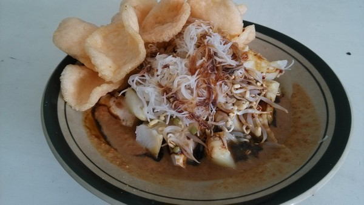

<html>
    <head>
        <title>Tugas Pemrograman Web</title>
        <link rel="stylesheet" href="style.css" type="text/css">
    </head>
</html>
<body>
    <header>
        <div class="nav-bar">
             
            <ul class="menu">
                <li> <a href="index.html">Home</a> </li>
                <li> <a href="Profile.html">profile</a> </li>
                <li> <a href="hometown.html">hometown</a> </li>
                <li> <a href="food.html">food</a> </li>
                <li> <a href="tourist.html">tourist</a> </li>

            </ul>

        </div>
        <div class="food">
            <h1 style="font-size:50px">FOOD</h1>

            <h2 style="font-size:40px">Ketoprak</h2>
            
            <p style="font-size:30px">1. Ketoprak is a popular Jakartan street food dish comprising mixed veggies. It is largely made up of rice vermicelli, steamed bean sprouts, 
                ketupat rice cakes and tofu, all doused in peanut sauce. Toppings vary from seller to seller, but mostly have fried shallots, shrimp crackers, cabbage and cucumber 
                added. Another extra is with hard-boiled egg, sliced and placed clear of the sauce. Sellers usually ask whether you prefer your ketoprak hot and spicy,
                and will oblige by adding a dab of chilli sauce on top.</p>
            <h2 style="font-size:40px">Nasi Uduk</h2>
            
            <p style="font-size:30px">2. Nasi Uduk is an original Jakarta rice dish, loosely meaning ‘mixed rice’. It is basically white rice cooked in coconut milk, hence the ‘mix’ aspect. 
                The rice is soaked in coconut milk prior to being conventionally steamed, together with cloves, Chinese cinnamon, aromatic pandan and lemongrass, making it probably one 
                of the most fragrant rice dishes you will ever enjoy. The rice is usually topped with fried shallots and serves as the main dish, served with other soups and salads on the 
                side. Some sellers serve their nasi uduk wrapped in banana leaves, with a variety of side choices.</p>
            <h2 style="font-size:40px">Ketupat/Lontong Sayur</h2>
            
            <p style="font-size:30px">3. Ketupat and lontong, both rice cakes that are widely used in traditional Indonesian cuisine, feature interchangeably in this popular dish. 
                The main component is a thick spicy soup made of coconut milk that is infused with lemongrass, galangal, turmeric, bay leaves, lemon leaves and pepper. The rice cakes, 
                sliced to pieces are served together with the soup, alongside pumpkin, sliced tomatoes; chayote, bamboo sprouts, carrots, snake beans and dried shrimp. 
                Variations include chicken or veal chops, and served with shrimp crackers or sliced boiled egg on top.</p>
            <h2 style="font-size:40px">Es Selendang Mayang</h2>
            
            <p style="font-size:30px">4. Es Selendang Mayang is a refreshingly tasty and texture-rich compote dish with slices of gelatinous cakes called ‘hunkwe’ as its main ingredient. 
                The ‘soup’ is a mixture of boiled brown sugar, aromatic pandan leaves, coconut milk, vanilla and salt and sugar added to taste. The dessert is served cold, with ice 
                cubes added. Street peddlers selling this treat are usually found walking around carrying two baskets on a stick that are filled with the ingredients in jars, and 
                prepare the blend with every order.</p>

        </div>
    </header>
</body>